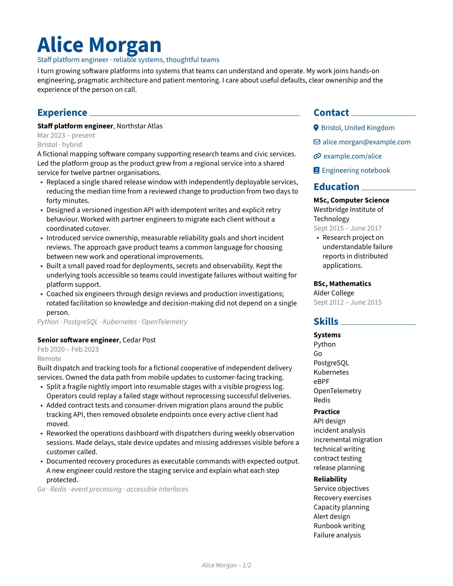
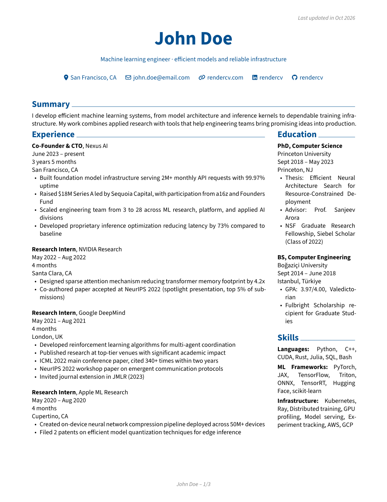
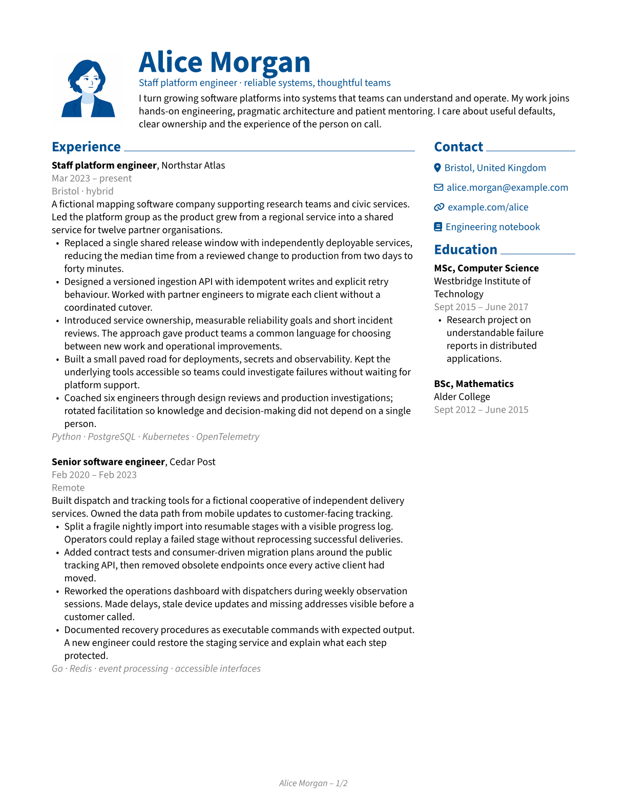
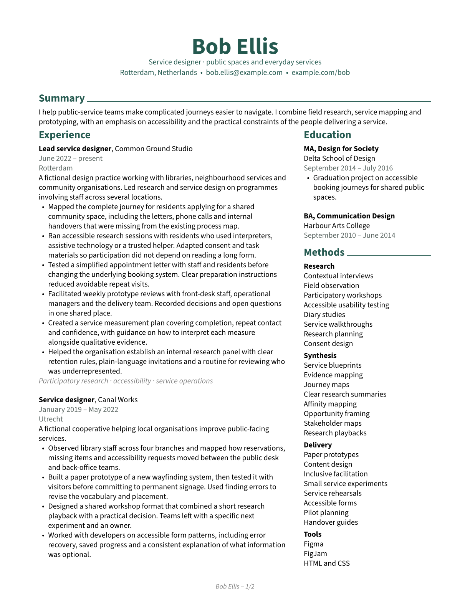
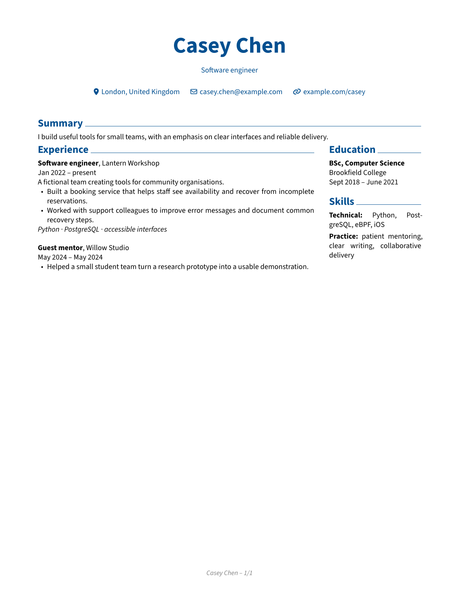
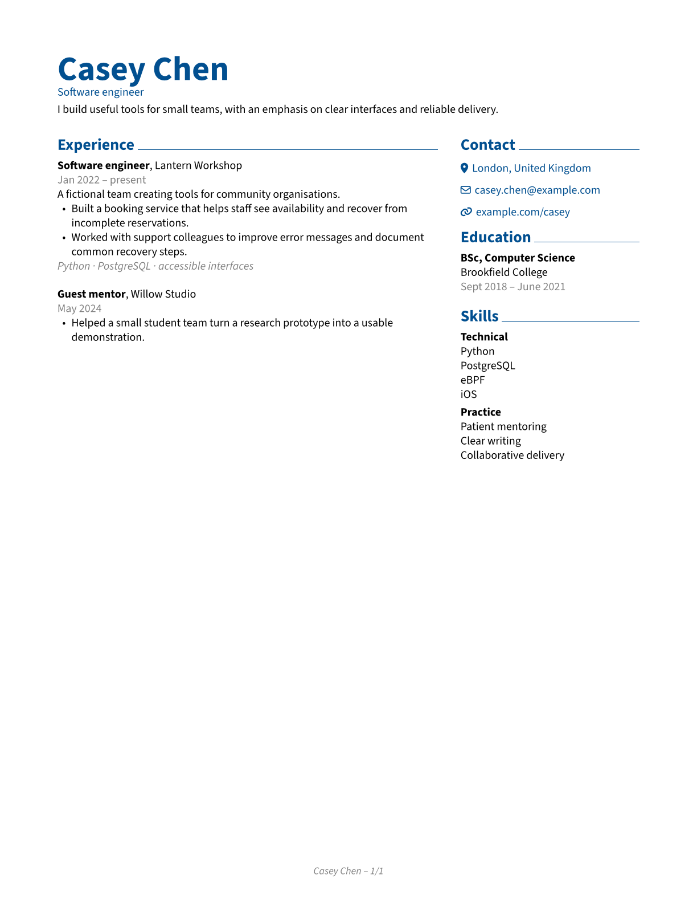

Two independent flows.
Choose the sections for each column. Main and sidebar content keep their own order and continue in their assigned columns across pages.
SidebarCV for RenderCV
Start with a ready-to-use layout. Choose the sections that belong in your sidebar.
Place sections in the main column, sidebar, header or across the page. Customize widths, contacts and typography in your RenderCV YAML.

Alice Morgan View the PDF ↗Choose the sections for each column. Main and sidebar content keep their own order and continue in their assigned columns across pages.
Choose main, sidebar, full-width or header placement for each section. Adjust the balance to suit the content of your CV.
Use the defaults, then choose widths, contacts, stacked lists and page-break rules. Your content stays in the standard RenderCV data model.
Meet the examples
Explore each CV page by page, then use its YAML as a starting point.


Compact & technical
A blue portrait, compact header and sidebar contacts. The complete Skills section starts together on page two.

Same content, a different balance
These are actual rendered PDFs.
The YAML content is identical.


Choose groups by label. capitalize_stacked_details: [Practice] capitalises items in the group labelled “Practice”. The “Technical” group keeps its original case.
Compact matching dates. With month-only formatting and collapse_same_dates: true, May 2–21 displays as May 2024.
From YAML to PDF
A local RenderCV theme you can keep beside your CV.
uv tool install "rendercv[full]"
git clone https://github.com/Un1oR/rendercv-sidebarcv-theme.git
cd rendercv-sidebarcv-theme
cp examples/alice.yaml my_cv.yaml
cp examples/alice-portrait.png .
rendercv render my_cv.yamlThe generated files appear in rendercv_output/. Edit my_cv.yaml, then render again. Use --watch for automatic updates. In PowerShell, use Copy-Item examples/alice.yaml my_cv.yaml and Copy-Item examples/alice-portrait.png ..
Install uv first if it is not available. Prefer pip? Use python -m pip install "rendercv[full]" in an activated virtual environment.
Copy the entire sidebarcv/ directory next to your input YAML, and select the theme:
my-resume/
├── cv.yaml
└── sidebarcv/
├── __init__.py
├── Preamble.j2.typ
└── ...design:
theme: sidebarcvKeep the theme folder beside the input YAML, including when you load a separate design file with --design.
cv: in one file and design: in another to try different styles with the same CV. Run rendercv render cv.yaml --design sidebar-design.yaml to select a design.Give your AI coding agent the repository URL and your existing CV, then ask it to create a SidebarCV layout while preserving your factual content.
Use section names from your own YAML in sections.overrides. Names are matched after lowercasing and replacing spaces with underscores: a section named Work Experience uses the key work_experience.
| Option | Default | What it changes |
|---|---|---|
sidebar_width | 0.25 | Sidebar share of available width after subtracting the column gap. A number strictly between 0 and 1. |
column_gap | 0.7cm | Nonnegative space between columns, using a RenderCV/Typst dimension. |
sections.overrides | {} | Named section overrides. Unspecified values inherit the global settings. |
sections.overrides.<name>.placement | null | Choose header, sidebar, main or full. null uses the default placement below. |
Content under the name and headline, without the section title. Beside the photo when present.
Independent right column, in source order. Contacts can open this column.
Left column, including on later pages after the sidebar has ended.
Before the first main section: full-width introduction. After it: close both columns and continue full-width.
By default, summary, publications, talks and talks_and_publications are full-width. education, skills, languages and hobbies go in the sidebar. Every other section goes in the main column.
design:
theme: sidebarcv
sidebar_width: 0.32
column_gap: 0.8cm
sections:
overrides:
summary:
placement: header
methods:
placement: sidebar
selected_writing:
placement: fullThere is one two-column block. A full-width section after main content ends that block; later main sections stay full-width. Sidebar sections are collected independently of that boundary. Empty sections do not create a boundary. If either column is entirely empty, the other uses the full width.
| Option | Default | What it changes |
|---|---|---|
header.connections.placement | header | header keeps RenderCV's contact row; sidebar puts location and connections at the top of the right column. |
header.connections.sidebar_title | Contact | The heading displayed above the sidebar contacts. |
header.photo_vertical_alignment | center | Align the photo to top, center or bottom within the header. |
design:
theme: sidebarcv
header:
photo_vertical_alignment: top
connections:
placement: sidebar
sidebar_title: Get in touchPhoto size, side, contact icons, hyperlinks and connection formatting use the regular RenderCV options. Long contact text may need a wider sidebar or a shorter custom connection label.
Stacking is opt-in. It applies to OneLineEntry groups (label + details) and plain TextEntry strings. A group label appears above its items. Case and terminal punctuation are preserved unless you explicitly change them.
| Section override | Default | What it changes |
|---|---|---|
stacked_details | false | Display delimiter-separated values on separate lines. |
stacked_separator | ',' | Split on a comma or '•', chosen explicitly for the section. |
capitalize_stacked_details | false | true capitalises each item's first character; false preserves it. A list of exact, case-sensitive group labels targets only those groups. The remaining characters are unchanged. |
strip_trailing_period | false | Remove one final period from the end of a stacked plain TextEntry. |
cv:
sections:
skills:
- label: Technical
details: Python, eBPF, iOS
- label: Practice
details: clear writing, patient mentoring
design:
theme: sidebarcv
sections:
overrides:
skills:
stacked_details: true
capitalize_stacked_details: [Practice]
entries:
allow_page_break: falseChoose the separator to match your content. A comma works for simple lists; • lets an item contain a comma:
# stacked_separator: ','
details: Python, PostgreSQL, eBPF
# stacked_separator: '•'
details: research, synthesis • accessible testingThe first example becomes three lines; the second becomes two. Splitting uses the literal separator, including when it appears inside quoted text. Inline Markdown and links are retained in the PDF/PNG output.
For OneLineEntry, select groups with their exact label values, as shown with [Practice] above. Use true or false for plain TextEntry strings. An empty label list preserves case. BulletEntry, NumberedEntry and ReversedNumberedEntry use their standard list rendering.
The standard defaults remain sections.allow_page_break: true and entries.allow_page_break: false. Section and entry policies inherit independently. An explicit true can override a global false; null or omission inherits.
| Section override | Default | Scope |
|---|---|---|
allow_page_break | null | The title and all entries in the section. |
entries.allow_page_break | null | Each entry, subject to the section's outer constraint. |
Compare the end of page one with the start of page two.
Under design.sections.overrides, with stacked_details: true:
# Let details flow
skills:
allow_page_break: true
entries:
allow_page_break: true# Keep the section
skills:
allow_page_break: false
entries:
allow_page_break: true# Keep each group
skills:
allow_page_break: true
entries:
allow_page_break: falsedesign:
theme: sidebarcv
entries:
allow_page_break: true
sections:
overrides:
experience:
entries:
allow_page_break: false
education:
allow_page_break: false
skills:
stacked_details: true
entries:
allow_page_break: falseThis allows long content to flow while keeping jobs and each skill group intact, and keeping the whole education section together. Use the smallest keep-together unit that fits your content; large units can leave whitespace at the bottom of a page.
| Option | Default | What it changes |
|---|---|---|
templates.collapse_same_dates | false | Show one date when the formatted start and end match, such as May 2024 – May 2024 becoming May 2024. |
colors.date_and_location | null | Colour metadata-only rows. null retains body colour. |
colors.tags | null | Colour the dedicated italic tag row in experience entries. null retains body colour. |
design:
theme: sidebarcv
colors:
date_and_location: gray
tags: gray
templates:
single_date: MONTH_NAME YEAR
collapse_same_dates: true
sections:
show_time_spans_in: []templates.single_date and sections.show_time_spans_in are standard RenderCV options. The defaults are MONTH_ABBREVIATION YEAR and [experience]. Set an empty list, as above, to hide computed durations.
Date and location colour applies to rows containing only DATE, LOCATION and separators. A row such as DATE • LOCATION removes the separator when one value is missing. Mixed prose such as SUMMARY, DATE keeps its normal styling.
cv:
sections:
experience:
- company: Lantern Workshop
position: Software engineer
start_date: 2022-01
tags: Python · PostgreSQL · accessible interfacesAdd tags to an experience or project entry to display an italic line beneath its content. The experience tag row also supports colors.tags.
| Option | Default | What it changes |
|---|---|---|
typography.bold_weight | 700 | Weight of strong emphasis, an integer from 100 to 900. Explicit heading weights are unaffected. The selected face must be available. |
The default font is Source Sans 3. Use typography.font_family to choose another font family.
For lighter emphasis, use weight 600 with Adobe Source Sans 3 Semibold and Semibold Italic. These faces are included under extras/fonts/ with their SIL Open Font License. Copy the directory to fonts/ beside your YAML and choose the weight:
# From the repository root, with my_cv.yaml beside sidebarcv/
cp -R extras/fonts fonts
# In the design section of my_cv.yaml:
design:
theme: sidebarcv
typography:
bold_weight: 600In PowerShell, use Copy-Item extras/fonts fonts -Recurse. RenderCV loads additional fonts from fonts/ beside the input YAML. Preserve the supplied licence when redistributing font files. See the repository's font files and licence and RenderCV's custom-font instructions.
SidebarCV supports standard RenderCV entries and builds on the classic theme's typography, margins and colours. Combine RenderCV's design options with the placement and formatting controls above.
PDF and PNG use the SidebarCV layout. RenderCV also generates linear HTML and Markdown in YAML section order. View Alice's HTML example. A matching two-column HTML layout is a possible future improvement. To include custom tags in HTML and Markdown, add them to your Markdown templates.
The tests cover tricky layout cases and multi-page CVs. Check your own rendered CV and report issues with a small YAML example that shows the problem.